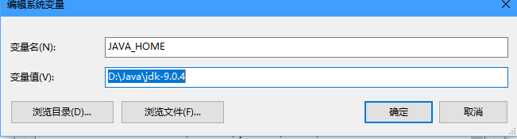

什么是java语言
1995由美国SUN公司推出的高级编程语言（后2009年甲骨文公司收购SUN公司）
常用的DOS命令
盘符切换命令：盘符:
查看当前文件夹：dir
进入文件命令：cd 文件夹名
退出文件命令：cd..
退出到根目录：cd\
清屏：cls
java开发环境
程序运行在JVM（java虚拟机）上，JVM运行在操作系统上，所以可以说java具备跨平台，但JVM不具备跨平台。
JRE：运行环境，包含JVM
JDK：java程序开发工具包，包含JRE
配置环境
右击我的电脑->单击属性->单击高级系统设置->单击高级选项卡->单击环境变量
在下面的对话框单击新建

变量名固定为JAVA_HOME
变量值为安装JDK的路径
在PATH添加新值：%JAVA_HOME%\bin
main方法
main方法称为主方法，是程序的入口或起始点。
注释
单行注释：//
多行注释：/* * /
常量
程序中固定不变的量为常量。
标识符命名规则：
可以出现26个字母，数字，下划线_，美元符号$
不能以数字开头
不能是关键字
命名规范：
HelloWorld 大驼峰式
helloWorld 小驼峰式
全部小写
数据类型
布尔类型 boolean
字节性 bit
短整数型 short
整数型 int
长整数型 long
单精度浮点型 float
双精度浮点型 double(默认)
字符型 char